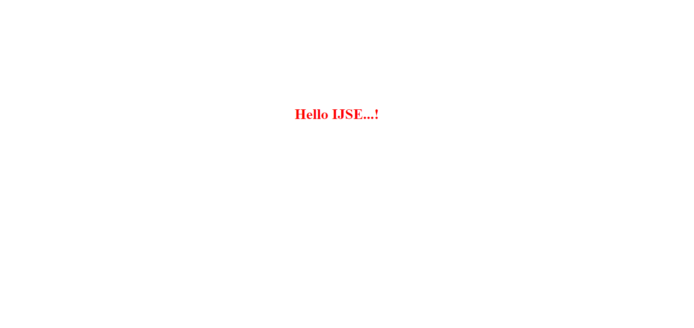
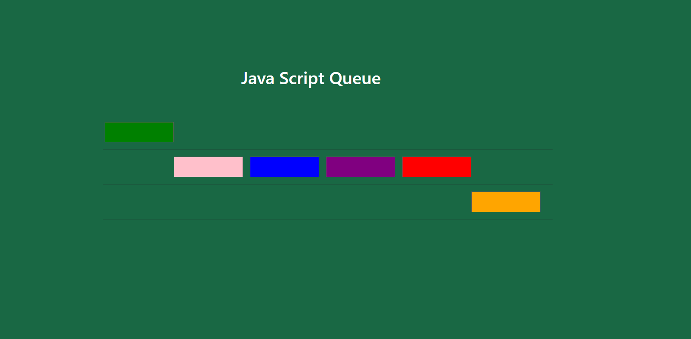

Task 01
- Javascript mouse events
- Mouse-move Event with JQuery
You can find task on go to Task 01
Task 02
- Javascript timeout event
- basic use of arrays
You can find task on go to Task 02
Task 03

- Javascript timeout event
- basic use of arrays
You can find task on go to Task 03